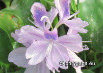

Merr., 1917")

| Phrygana: la Nature en Crète principalement, mais aussi d'ailleurs ... |
|  |
|
|
| Pontederia crassipes | Citrus maxima | Cissus quadrangularis |
| Espèces: 1353--- Faune: 539 -- Flora: 789 -- Galles (Bacteria): 2 -- Champignons: 22 -- Lichens: 1 | |||||
| Nouveautés | |||||
| Flora: | Durio zibethinus | Flora: | Christia vespertilionis | Fauna: | Haliaeetus leucogaster |
| Flora: | Clerodendrum speciosissimum | Fauna: | Butorides striata | Fauna: | Heliconius charithonia |
| Flora: | Petrea volubilis | Flora: | Couroupita guianensis | Fauna: | Cygnus atratus |
| 18 mars 2023 |